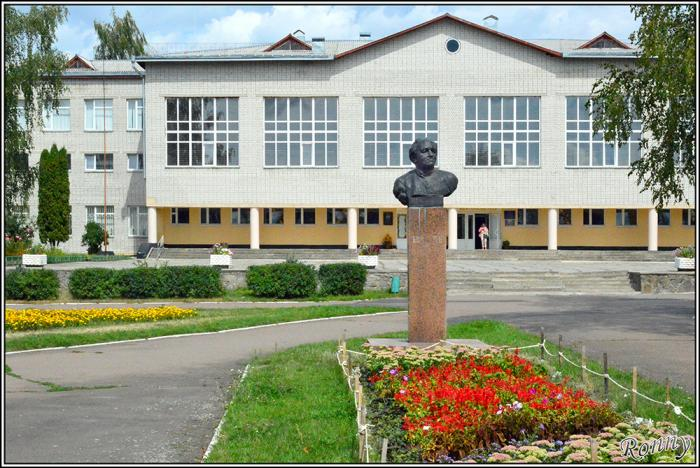
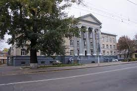
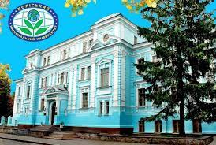

Education
Zhitomyr ecological lyceum
September 2000 - June 2008| Ukraine

Created in 2004 on the basis of secondary school №24, which has existed since 1985. Number of classes - 52. Number of students - 1544. Number of teachers - 104, of which: the highest category - 60; Methodist teachers -18; senior teachers - 15; excellent students of education of Ukraine - 10; awarded the badge "Vasyl Sukhomlynsky" - 2.
Zhitomyr cooperative college Accounter
September 2008 - June 2011| Ukraine

Zhitomyr National Agroecology University Accounter
September 2011 - June 2014| Ukraine

Zhytomyr National Agroecological University is the only agrarian higher educational institution of ecological orientation in the country and the only national university in Zhytomyr Region, which is the base for training specialists for most sectors of the economy of Polissya Ukraine (Zhytomyr, Rivne, Volyn regions).
Today it is a large complex with a developed infrastructure:
- 8 faculties (agronomic, technological, veterinary medicine, engineering and energy, ecology and law, forestry, accounting and finance, economics and management);
- 42 departments and 85 of their branches in production and research institutions;
- 5 Research and Innovation Institutes (Institute of Economics and Agribusiness; Institute of Agrotechnology and Land Management; Institute of Animal Husbandry and Veterinary Medicine; Institute of Ecology and Forestry; Institute of Mechanization of Agro-Industrial Production and Energy Efficiency);
- Research Institute of Regional Environmental Problems;
- Institute of Postgraduate Education and Counseling;
- Research field;
- Botanical Garden;
- Training farm and training-research-production clinic of veterinary medicine;
- Scientific Library;
- Editorial and publishing department;
- Developed catering network;
- Sports base.